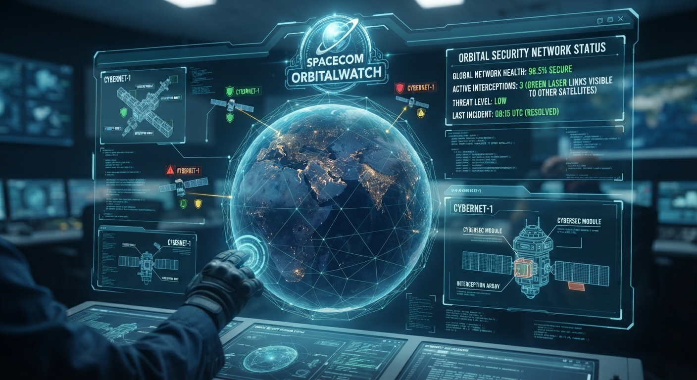
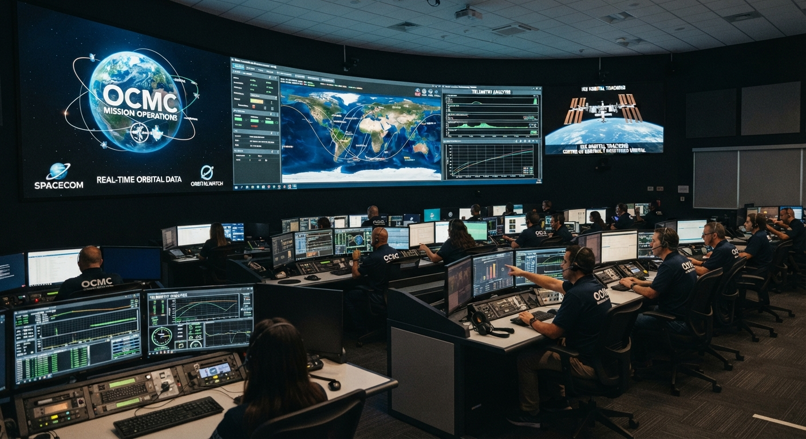
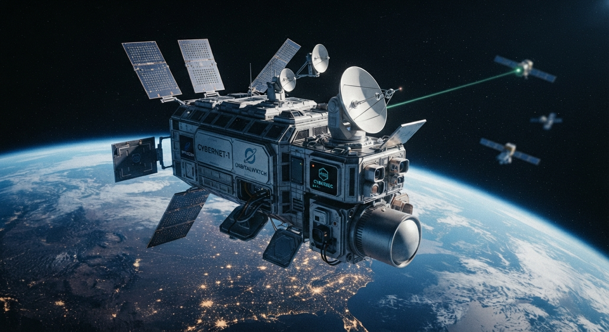
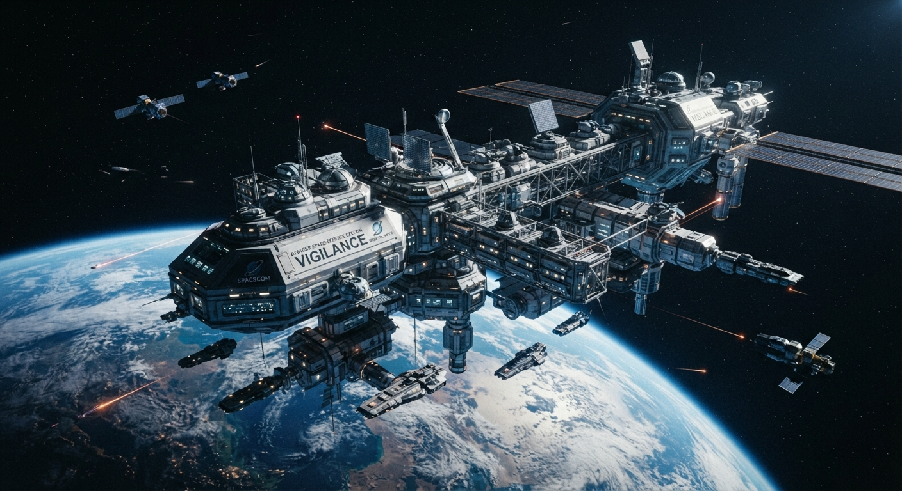

🛡️ Convergencia Tecnológica: Cohetes Reutilizables y Ciberseguridad
De la Propulsión Orbital al Blindaje de Datos en Redes Descentralizadas


El desarrollo de cohetes reutilizables de alta precisión —liderados por innovaciones como las de SpaceX— requiere sistemas informáticos hiperconectados, telemetría en tiempo real de milisegundos y redes satelitales masivas (como Starlink). Esta misma infraestructura espacial exige arquitecturas de ciberseguridad resilientes y autónomas capaces de proteger contra ataques cibernéticos y brechas invisibles tanto en la Tierra como en el espacio exterior.
🌍 Centro de Control: Vistas en Vivo de la Tierra y la ISS
ISS Live 4K: Earth from Space Orbital Feed
Transmisión oficial en directo de la Tierra capturada desde los módulos de observación de la Estación Espacial Internacional.


NASA / Orbital Earth High-Definition Camera Feed
Cámaras robóticas de órbita baja enfocadas en la superficie terrestre, océanos y atmósfera en tiempo real.


🚀 Innovación Aeroespacial: SpaceX y el Futuro de la Propulsión
SpaceX Starship & Super Heavy Orbital Integration
Seguimiento de las pruebas de vuelo orbitales y los avances tecnológicos en cohetes reutilizables de gran escala.


Falcon 9 Launch & Global Connectivity Grid
Lanzamiento y despliegue de constelaciones satelitales que potencian la conectividad global segura y la ciberdefensa distribuida.